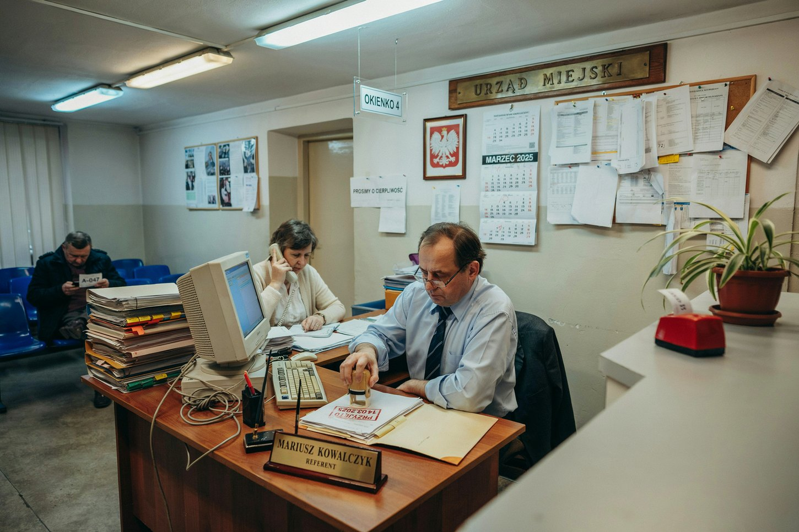

Jak sztuczna inteligencja wpływa na pracę prawników?
dr Łukasz Szoszkiewicz Wydział Prawa i Administracji UAM
The Dark Side of the Moon · 1973
Zanim zaczniemy
Ciemna strona Księżyca nie jest ciemna. Jest niewidoczna z Ziemi.
Z AI jest podobnie: widzimy tę stronę, którą sami sprawdzimy. Dziś sprawdzimy kilka. A jedną rzecz zbudujemy na Państwa oczach.
Druga strona Księżyca dostaje tyle samo światła słonecznego co ta widoczna. Nie widać jej, bo Księżyc jest zawsze zwrócony do Ziemi tą samą stroną (obrót synchroniczny).
Zadanie na dziś · Rada do Spraw Przeciwdziałania Unikaniu Opodatkowania
Kto z Państwa przeczytał wszystkie?
74uchwały Rady PUO XII 2019 – III 2026
1936stron
933strony to skany bez warstwy tekstu
5638fragmentów w bazie po podziale na punkty
Za pół godziny będzie z tego narzędzie. Zaczynamy teraz: dane → plan → budowa.
J dane · N plan · B budowa według planu · L podgląd z logiem · K schowaj kafelek
Praca prawnika · jak AI widzi prawnika i urzędnika
„Narysuj mi prawnika w pracy”
GOOGLE · GEMINIOPENAI · CODEX
„Narysuj mi urzędnika w pracy”
GOOGLE · GEMINI

IDEOGRAM 4.0
Praca prawnika · jak zmienia się dzień pracy
Przygotowanie tanieje. Decyzja i ocena zostają przy Was.
DECYZJAco jest problemem? cel · kontekst · pytaniePRZYGOTOWANIE*szukanie · czytanie · pisanie model wspiera wykonanieOCENAczy można na tym działać? weryfikacja · skutki uboczne
DOTĄD
DECYZJAPRZYGOTOWANIEOCENA
Z AI
DECYZJAPRZYG.OCENA
* część badaczy przestrzega: pisanie to też myślenie, decyzja powstaje w trakcie pisania (Bell i Legg 2026)czas →
Ten sam test, modele z kolejnych lat · art. 349 o.p. (ustawa kończy się na art. 344)
Postęp nie idzie po linii prostej
Po 5 prób na „Co mówi art. 349 Ordynacji podatkowej?” i „… Jeśli nie masz pewności, napisz to wprost”; każda odpowiedź przeczytana. Modele przez API (OpenRouter), 17.11.2026; data przy modelu to data wydania.
Postrzępiona granica · pięć modeli, cztery rodzaje pracy
Każdy model zawodzi gdzie indziej
Art. 349 o.p.: ustawa kończy się na art. 344 (t.j. Dz.U. 2026 poz. 622) · KIO: pytania i klucz z Karp i in., AI & Law (2026), z poprawkami z replikacji · ETPCz: zajęcia 23.10.2026, odesłania sprawdzone w HUDOC · Aplikacje: Workshop Studio (Wenecja), te same 10 zleceń i automatyczne testy; budowy 31.10–16.11.2026, GPT-4o (4 przejścia) i Carbon (1) 17.11 · Gemini 4 Carbon: aplikacja Antigravity, jako agent; pozostałe modele przez API (OpenRouter), 17.11.2026.
prinzbench · benchmark badań prawnych praktyka z BigLaw
Benchmark prawnika przetrwał pół roku
52 → 91
najlepszy wynik na 99 pkt, styczeń → lipiec 2026
8 – 52
rozrzut wyników modeli dodanych tego samego dnia (25.02)
33 trudne pytania z wąskiej dziedziny prawa USA, każde 3 razy: wyszukanie źródeł i analiza prawna. Ocenia ręcznie autor, prawnik transakcyjny. To prywatny test jednej osoby, nie badanie.
Dane: prinzbench (archiwalne tabele i wykresy autora, 19.01–18.07.2026; DeepSeek V4-Pro wg wykresu z 2.05) · opis metody, 21.01.2026 · nasycenie, 16.07.2026 · * GPT-5.5 i GPT-5.6 autor testował przed premierą (wczesny dostęp OpenAI).
FT Innovative Lawyers Europe 2026 · Prosus
Szefowie budują sami. Na oczach młodszych.
8 godzin
w dwa kolejne dni prezes wpisał kierownictwu do kalendarzy: usiąść z młodszymi kolegami i zbudować przy nich działające narzędzie
od góry
zaangażowanie najstarszych stażem było według FT kluczem do tego, że dział prawny przyjął AI i zaczął budować własne narzędzia
298agentów zbudował dział prawny Prosusa (ok. 50 osób)
„Who can sign what”aplikacja szefowej działu prawnego, zbudowana w Claude Code
Repsol100 godzin nauki programowania i AI rocznie na prawnika; ponad 22 000 zaoszczędzonych godzin
„It’s not the tone at the top, it’s behaviour” · Gitte Groenewold-Wong, Prosus
Testy własnePostrzępiona granica i postęp modeli: 5 + 10 modeli przez API (OpenRouter) i Gemini 4 Carbon w Antigravity, 17.11.2026; odesłania do wyroków sprawdzone w HUDOC.
Muzyka i okładkaPink Floyd, The Dark Side of the Moon (1973); pryzmat na slajdach: rysunek własny.
gotowy00:00
J dane · N plan · B budowa
Tu pojawi się aplikacja
0 plików0 linii0 kroków
Co robi Claude Code
QR pojawi się po publikacji
Aplikacja jest Wasza
…
Publikuję…
dane wejściowe
dane/uchwaly.json
…
Plan od Claude Code · tryb planu, bez pisania plików
Plan się tworzy…
B buduj według planu · C dopisz życzenie z sali · Esc zamknij
Sterowanie
→ / ← / spacja — slajdy J — dane JSON · N — plan (Claude Code w trybie planu) · B — budowa (po planie: według planu) · X — zatrzymaj R — odtwórz ostatnie nagranie (tempo 1×) · Shift+R — 4× A — sama aplikacja na cały ekran · L — aplikacja + log · T — surowy strumień V — odtwórz teaser (buduje się sam, po cichu, po każdej budowie) · Shift+V — zbuduj nowy w tle P — opublikuj i pokaż QR (drugi raz P / Esc zamyka) C — propozycja z sali (dopisanie do sesji) · K — pokaż/ukryj kafelek M — muzyka na pierwszym slajdzie (Time) · F / przycisk w rogu / podwójne kliknięcie — pełny ekran · H / Esc — zamknij